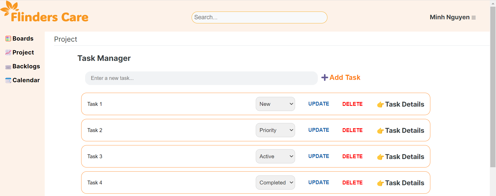
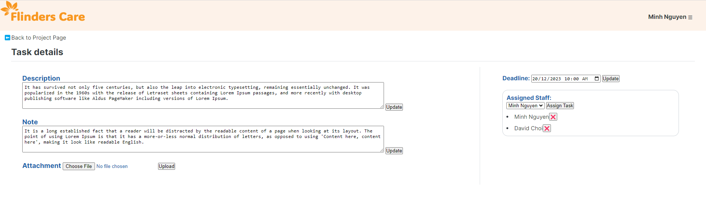
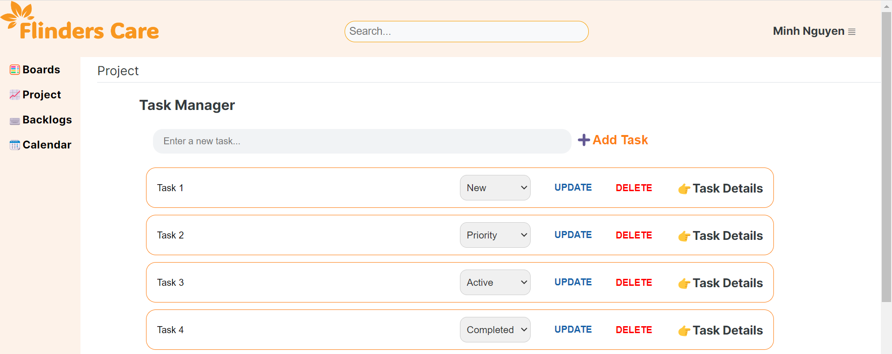
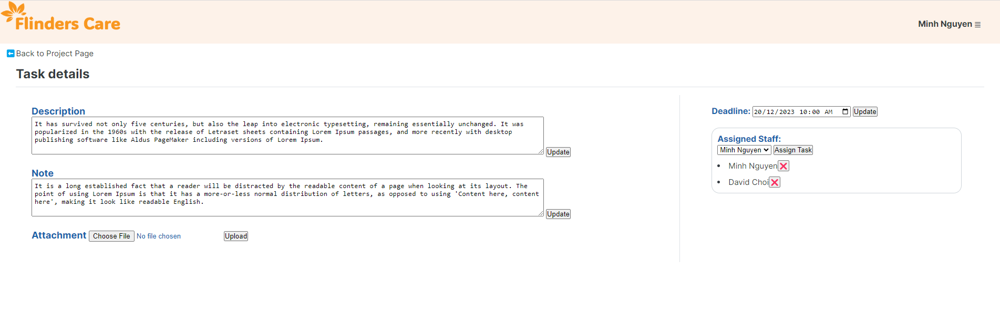
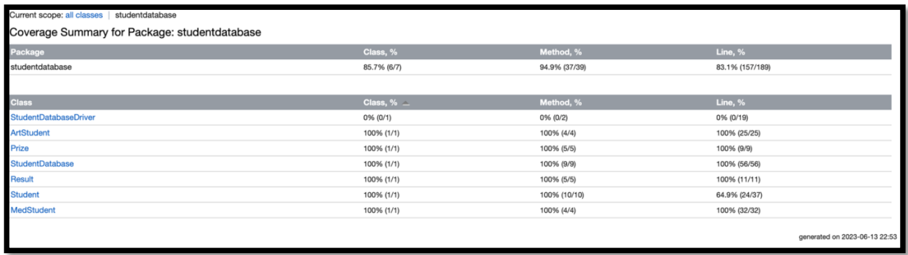
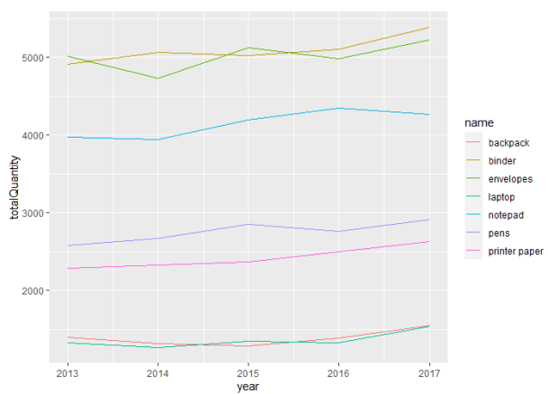
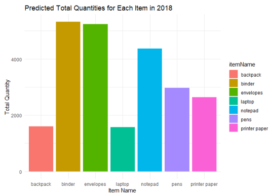
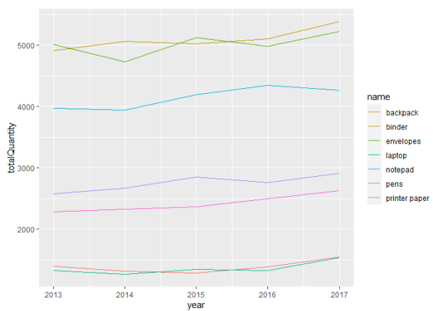
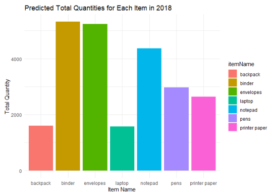

About me
Throughout my IT course, I have successfully completed several small projects, and I am actively engaged in ongoing project development to enhance my skills continuously.
While my knowledge and experience in the field are still growing, I have been exposed to various programming languages, including Java, HTML, CSS, JavaScript, R, etc. Particularly, my keen interest lies in HTML, CSS, and JavaScript.
Although I may not have an in-depth understanding of every programming language, my commitment to learning is unwavering. I am dedicated to hard work and strive to learn something new every day. My proactive approach to acquiring knowledge and improving my skills makes me confident in my ability to contribute effectively to a dynamic work environment.
I am eager to bring my enthusiasm, dedication, and evolving technical skills to a challenging position where I can contribute to innovative projects and further develop my expertise as a Software Engineer/Developer.
Resume
Education
| Master of Information Technology at Flinders University, AUS | Duration: Feb 2022 – Dec 2023 |
|---|
| Bachelor’s in law – Ho Chi Minh City University, VN | Duration: Sep 2009 – Dec 2013 |
|---|
Work Experiences
| Fulltime Student at Flinders University, SA | Feb 2022 – Dec 2023 |
|---|
|
Achievement
|
| Casual Professional Register – Information Technology for Flinders University, SA | Nov 2022 – Jan 2023 |
|---|
| Canvas Migration Project: Imported content from FLO to Canvas – Cleaning – up content and writing report. Peer – reviewing migrating topics and giving feedbacks. |
|
Key Learning
|
| Shop Front Vacancy Audit Officer for Council City of Melbourne, VIC | Sep 2021 – Feb 2022 |
|---|
| The Shop Front Vacancy Audit team (Economic Development & International) is responsible for auditing 100% of businesses over a monthly reporting cycle as this is critical to the success of the program. To gather business operational data, helping to establish when business is open or reopening for community forums or communication platforms. |
|
Key Learning
|
Skills
Technical Skills
- Programming Languages: HTML, CSS, JavaScript, PHP, Java.
- Database and Tools: SQL, R, MySQL, RStudio, MySQL Workbench.
- Development Tools: Azure DevOps, GitHub, Figma.
- Others: Microsoft office.
Soft Skills
- Proven communicator with a talent for clear expression and active listening.
- Collaborative team contributor fostering a positive team environment.
- Quick adaptability to change and new technologies.
- Analytical thinker with a knack for resourceful problem-solving.
- Efficient task prioritization ensuring timely deadline completion
- Quick learner, adept at swiftly grasping and implementing new concepts and technologies
Projects
Project/Task Management Tool
Summary
Developed a comprehensive project/task management tool with four cycles.
Background
- The project under the topic "Human Factors for Interactive and Web-Based Systems" at Flinders University aimed to explore and apply principles of human factors in the context of interactive and web-based systems.
- Group memember: 1
Scope
Develop a project management tool for users to register, login, create/edit tasks, and assign tasks to individuals or groups. The tool includes a Kanban page for visual task tracking, fostering collaboration, and facilitating user-friendly interaction.
Technology & Tool
Languages: HTML, CSS, JavaScript, PHP, SQL; IDE: Visual Studio Code; Database: MySQL; Server: XAMPP; Design: Figma.
Code source
The source code is not available for public sharing to uphold the integrity and security of the University's academic work.
Picture Gallery
Please click to the picture below 👇
 




Testing and Quality Assurance Project
Summary
Developed a Student Database Management Application using Java, incorporating both black box and white box testing techniques to practice and refine software testing methodologies.
Background
- The project under the topic "Software Testing and Quality Assurance GE" at Flinders University.
- Group memebers: 4
Scope
The project focuses on evaluating the effectiveness of the testing process and ensuring the quality and reliability of the developed software. The testing activities covered in the project include both black box and white box testing (JUnit) techniques.
Technology & Tool
Java, IntelliJ IDEA, Junit5, Microsoft office tool.
Code source
The source code is not available for public sharing to uphold the integrity and security of the University's academic work.
Picture Gallery
An Example of defect report 👇
JUnit test coverage 👇
Data Analysis Project - Sale analysis
Summary
Conduct an analysis covers various aspects of data collection, data wrangling, data analysis and data prediction of sales data collected from the database in MongoDB to gain insights into the sales performance of a company.
Background
- The project under the topic "Data Engineering GE" at Flinders University.
- Group memebers: 4
Technology & Tool
R, RStudio.
My role
Led the team in conducting an in-depth analysis, overseeing aspects such as data collection, data wrangling, and implementing predictive analytics. The focus was on extracting meaningful insights to enhance the understanding of the company's sales performance.
Code source
The source code is not available for public sharing to uphold the integrity and security of the University's academic work.
Picture Gallery
 



Personal Portfolio
Summary
Creating a simple personal protfolio for myself
Technology & Tool
HTML, CSS, JavaScript.
Code source